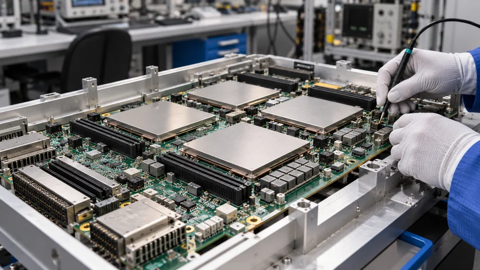

Amazon Takes Aim at Nvidia’s Software Advantage
TorchNeuron brings native PyTorch workflows to Trainium. Easier migration could widen hardware choice, but cost savings still depend on the workload.

Amazon is pushing further into the software layer of the AI chip market with TorchNeuron, a native PyTorch backend for its Trainium accelerators. The October 19 announcement targets a practical obstacle to switching hardware: the engineering work needed to move an existing model onto a different computing platform.
For AWS, lowering that barrier could make its own chips easier to evaluate alongside Nvidia-based cloud instances. For customers, the immediate opportunity is a wider choice of infrastructure. Whether that choice produces a cheaper production system remains a separate calculation.
Familiar tools on a different chip
PyTorch is a machine-learning framework used to build and run models. TorchNeuron connects those workflows to Trainium through a native backend, with support for eager execution, compilation and distributed processing. Eager execution helps developers inspect operations as they run; compilation can optimize parts of a model for deployment.
AWS documentation describes small configuration changes for standard workflows. Its examples change the selected device from CUDA to Neuron and specify a Neuron backend when using torch.compile. Distributed configurations must also reflect the available NeuronCores. Those examples describe a shorter migration path, rather than a guarantee that every existing application will transfer unchanged.
The PyTorch conference program separately lists Trainium demonstrations covering model training, serving, profiling and custom kernels. It also includes a Google session on native PyTorch support for TPUs. Software portability is becoming a competitive priority across accelerator suppliers, extending the contest beyond the specifications of individual chips.
Custom software remains a dividing line
Standard framework operations and hardware-specific extensions present different migration problems. A model may use ordinary PyTorch code for most of its work while relying on a small set of custom kernels for its most demanding calculations.
An AWS engineering article on kernel migration explains that CUDA and Triton kernels written around a GPU’s execution model need adaptation for Trainium. It describes converting them to the Neuron Kernel Interface, followed by correctness checks and performance profiling. Native PyTorch integration therefore does not remove every hardware dependency in a mature application.
That distinction matters most when an organization has already invested heavily in optimization. Moving the model definition is only one part of replacing a production stack. Validation, deployment tools and operational support can determine whether a technically successful migration is commercially worthwhile.
The relevant price is the cost of useful work
TTN’s assessment is that easier compatibility chiefly reduces the cost of trying an alternative. It gives a team more room to compare platforms before committing to a larger deployment. It does not, by itself, establish a price advantage for either supplier.
A useful comparison keeps model quality and service requirements constant. For training, that means checking the cost and time needed to reach the same target quality. For inference, it means comparing completed requests at an acceptable error rate and response time. The analysis of AI inference economics explains why a low headline computing price can obscure retries and other operating costs.
Infrastructure also has to remain productive between peak workloads. Idle capacity, storage, networking and engineering time affect the total bill. As The reporting on AI networking explains, accelerator performance depends on the surrounding system as well as the chip.
A credible pilot would therefore record engineering hours alongside computing charges, retain the original workload as a baseline, and test recovery from failed jobs. That gives procurement teams evidence they can compare with an existing supplier contract.
A test of adoption
Amazon’s next commercial test is whether simpler access leads customers from experiments to sustained workloads. A demonstration can establish that a model runs; repeated production results are needed to establish reliability and cost.
For Nvidia, a more portable framework could make competing accelerators easier for customers to consider. The size of that effect will depend on application compatibility and measured economics. TorchNeuron broadens the options available to developers, while leaving customers with the work of proving which option fits their business.
Sources and methodology (4)
Reporting checked October 19, 2026. Technical descriptions use AWS documentation and the PyTorch conference program. Earlier versioned documentation still describes a closed beta; this article does not independently certify general availability. Cost and competitive implications are TTN analysis, not measured performance results. The cover is illustrative and does not depict an actual Trainium board.